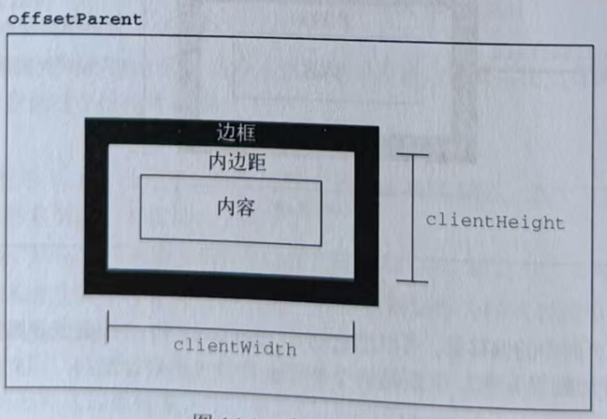

元素的客户端尺寸(client dimensions)包含元素内容及其内边距所占用的空间。客户端尺寸只有两个相关属性: clientwidth 和 clientHeight。 clientwidth是内容区宽度加左、右内边距宽度clientHeight 是内容区高度加上、下内边距高度。图14-2形象地展示了这两个属性 其实就是内容加上内边距
客户端尺寸实际上就是元素内部的空间，因此不包含滚动条占用的空间。这两个属性最常用于确定浏览器视口尺寸， 即检测 document.documentElement的ciientwidth和clientHeight。这两个属性表示视口(<htm1> 或 <body>元素)的尺寸。
clientLeft 和 clientTop 获取元素左边框的宽度 和 获取元素上边框的高度
注意与偏移尺寸一样，客户端尺寸也是只读的，而且每次访问都会重新计算 。